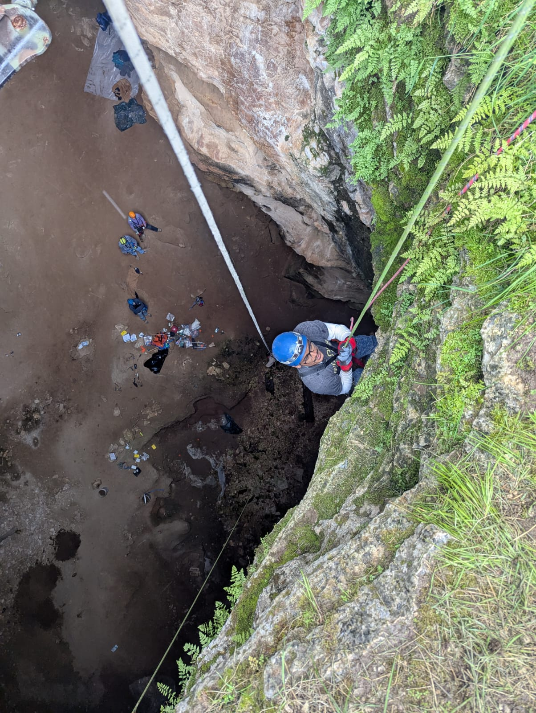
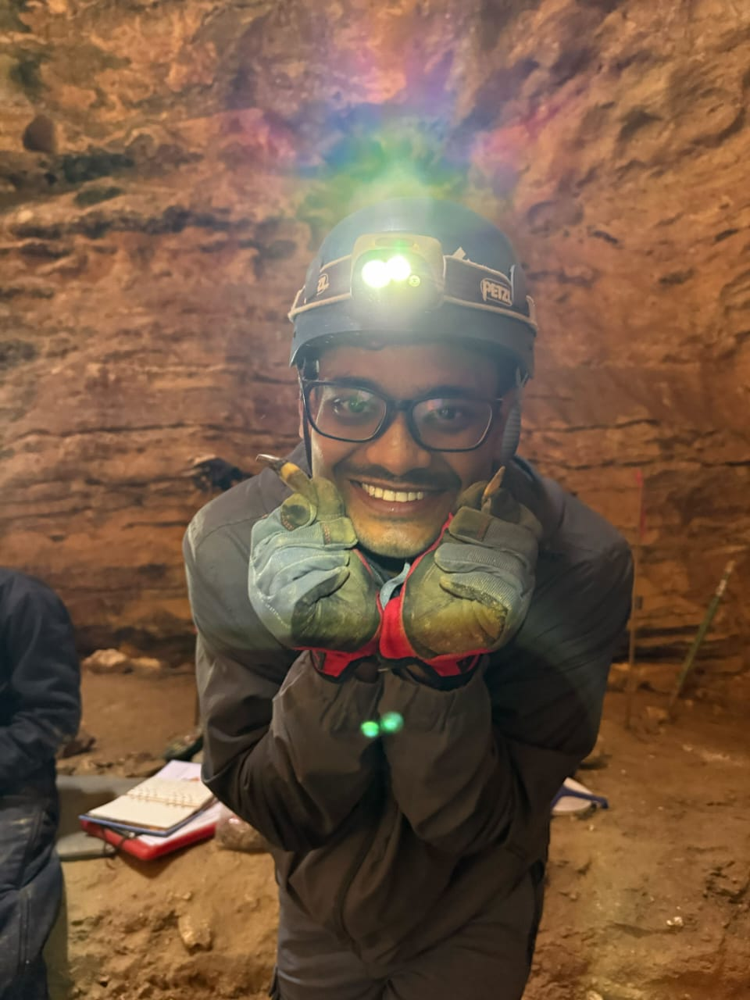
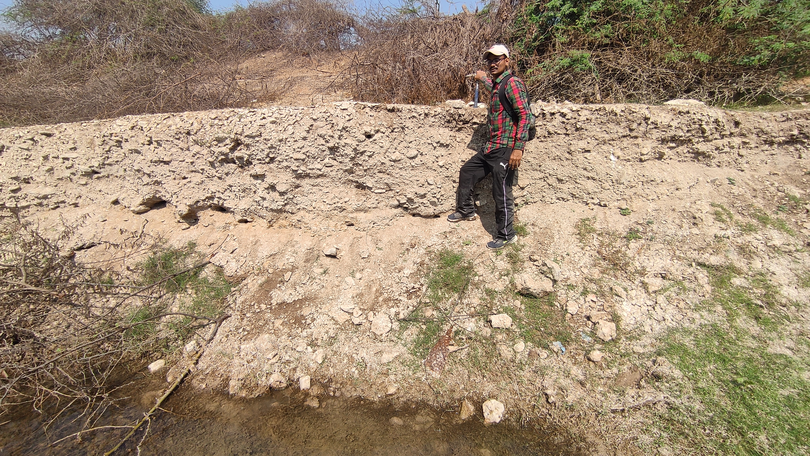
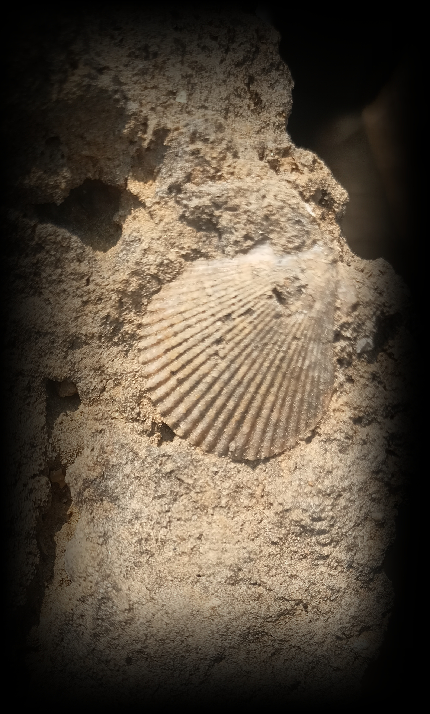
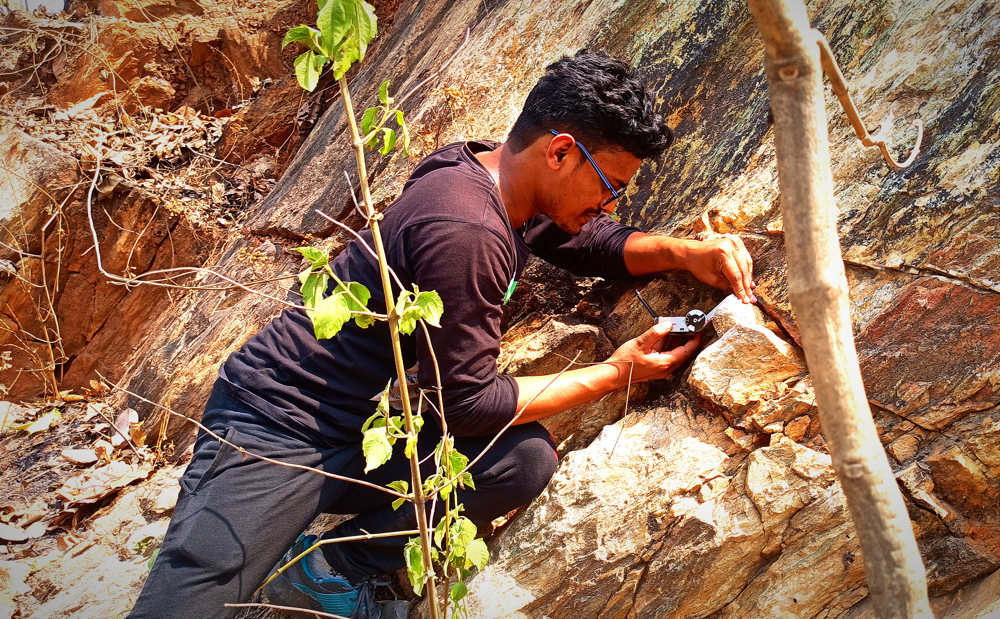
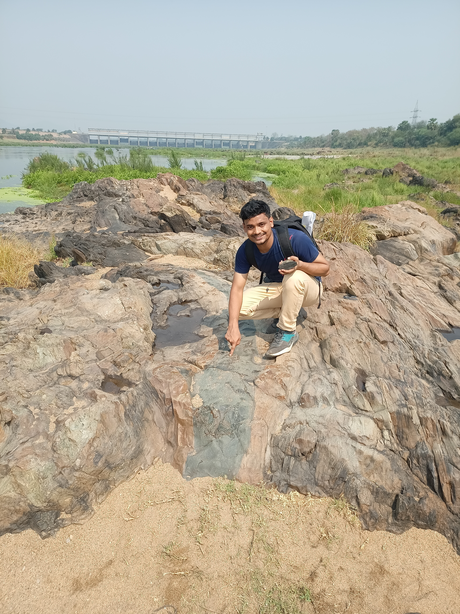

PhD Candidate | Quantitative BioSciences
Home School: Earth & Atmospheric Sciences
Georgia Institute of Technology
I am a PhD candidate in Quantitative Biosciences at Georgia Tech, working in the Spatial Ecology & Paleontology Lab with Prof. Jenny McGuire. My research uses the fossil record and paleofire databases to understand how climate change and large wildfire events have reshaped mammalian communities over long temporal scales. Trait–environment relationships from past ecosystems can also tell us how mammals may respond to future change. I also use satellite fire data and connectivity modeling to design firebreak corridors that limit large fires while keeping wildlife movement pathways open.
I completed my BS-MS in Geological Sciences at the Indian Institute of Science Education & Research (IISER), Kolkata, in 2023.
With Prof. Jenny McGuire (Georgia Tech)
With Prof. Jenny McGuire (Georgia Tech) & Dr. Michelle Lawing (Texas A&M)
Quantifying trait-environment relationships using ecometric modeling and evaluating point connectivity using Omniscape connectivity modeling. Developed novel methods for analyzing ecometric anomaly significance.
With Dr. Subhronil Mondal (IISER Kolkata) & Prof. Phillip Novack-Gottshall (Benedictine University)
Quantified ecological diversity using theoretical ecospace framework. Analyzed ecospace structuring in the aftermath of the Permian-Triassic mass extinction and during the Mesozoic Marine Revolution. Used machine learning to classify models of ecological diversification.
Pleistocene Mammals

Descending into Natural Trap Cave
Me when I found my first mammal teeth fossilsGot exposure to mammalian fossil identification, cave stratigraphy and geology of Wyoming in a two-week-long field trip at Natural Trap Cave, one of North America's most significant fossil localities for Late Pleistocene megafauna.
Paleontology & Stratigraphy - Marine Invertebrates

Fieldwork on the West Coast of India
Marine bivalve fossil specimenFieldwork along the West Coast of India studying marine invertebrate fossil assemblages and stratigraphic sequences. Collected and documented corals and molluscs specimens in guidance with Dr. Subhronil Mondal (IISER Kolkata).
Petrology & Structural Geology

Taking structural geology measurements
With a Dike, GaludihGeological fieldwork focused on petrological analysis and structural geological mapping in the Jharkhand region of India, examining rock fabric, deformation structures, and lithological variations.
Email: ankitraj[at]gatech[dot]edu
GitHub: github.com/ankit-raaz
Affiliation:
Spatial Ecology & Paleontology Lab
Quantitative BioSciences
Home School: Earth and Atmospheric Sciences
Georgia Institute of Technology, Atlanta, GA